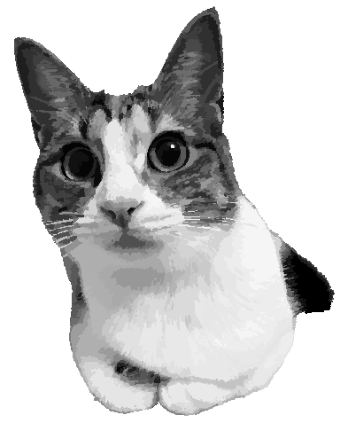
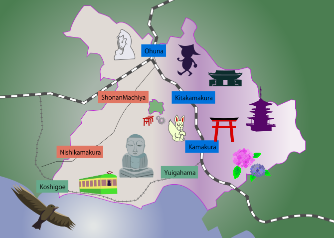

私のポートフォリオでは、独自の視点やスキルを活かした多様な作品を紹介しています。プロジェクトごとの目標や成果、制作過程なども含め、創造性や技術的な強みがひと目でわかる内容になっています。各作品を通して表現したスタイルや専門性が、今後の活動にもつながるようデザインされています。
「カフェ＆ダイニングバーminori」

「minori」は、鎌倉・七里ヶ浜の自然に囲まれた隠れ家的フレンチレストランです。温かみのあるインテリアとリラックスした雰囲気の中、地元の旬の食材を活かした田舎風フランス料理と心地よいひとときを提供しています。
「鎌倉あるこ。」

鎌倉探検旅行をコンセプトに、歴史と自然が調和する鎌倉の魅力を存分に楽しむことができます。鎌倉は古都ならではの寺社巡りや、豊かな緑に囲まれた散策路、美しい海岸線など、多彩な見どころがぎゅっと詰まった場所です。円覚寺や報国寺など、歴史と文化が息づく寺院で静かな時間を過ごしたり、古道を辿って大仏切通や朝夷奈切通などの自然豊かな名所を訪れてみてください。
@ my